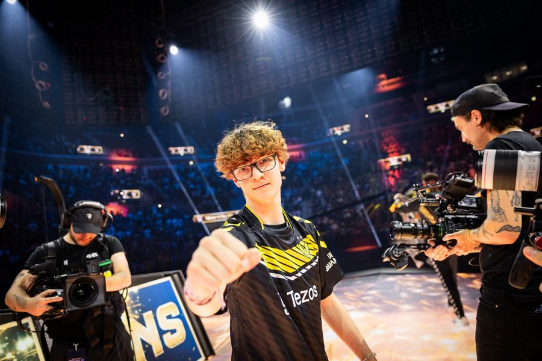

ROCKET LEAGUE
Comment fonctionne rocket league
Sur rocket league, plusieurs rangs existent pour déterminer le niveaux des joueurs, allant de bronze à SuperSonicLegend le meilleur rang, seulement 1500 joueurs en font parti (0.03%)
L’eSport Rocket League en 2023
Le format e-sport de Rocket league est plutôt simple par rapport à d'autres jeux et voici comment il fonctionne.
* La saison est divisée en trois splits (segments): Fall (Automne), Winter
(Hiver) et Spring (Printemps).
* Chaque split est composé de trois tournois mineurs pour chaque région (appelés Regionals), ponctués d’un
tournoi majeur international en LAN.
* Les Regionals rapportent des points en fonction des performances. À la fin des trois Regionals, les équipes
avec le plus de points sont invitées au Major qui conclut le split. Le Major rapporte deux fois plus de
points.
* Chaque Régional et chaque Major de chaque Split accueilleront seize équipes.
LES WORLDS
A Düsseldorf en Allemagne du 3 au 16 aout et après 3 split 9 tournois pour chacune des 7 régions 3 majors il est temps de conclure la
saison avec les worlds 24 équipes s'élances donc pour 10 jours de compétition dans l'espoir d'être sacré champion du
monde (même si en vrai on sait déjà que Vitality vas gagner ;)) Les Worlds comprendront deux étapes principales : le
World Championship Wildcard et le World Championship Main Event.
* Huit équipes se qualifieront automatiquement pour le Main Event. Les régions qui obtiennent les meilleurs
résultats aux Majors sont récompensées par des places d’auto-qualification.
* Le World Championship Wildcard se déroulera juste avant le Main Event, et départagera seize équipes qui n’auront pas
réussies à se qualifier au Main Event. Les huit meilleures équipes du World Championship Wildcard se qualifieront
pour le World Championship Main Event.
a la fin de toutes cette compétition et dans un NO match entre Vitality et BDS l'équipe de l'abeille extermine 4 - 0 l'équipe BDS et est donc sacrée championne du monde
Enfin plutôt que de trop compliqué notre explication nous vous conseillons cette vidéo qui explique extrêmement bien le déroulement de la compétion Explication RLCS
Les rois de Rocket League
L'année 2023 à été très importante pour l'e-sport Rocket League et ses joueurs pro. Au début de cette année, un joueur est arrivé chez l'équipe Vitality. Ce joueur est Zen, âgé seulement de 16 ans il à bouleversé l'esport au vu de son niveau bien supérieur par rapport aux autres joueurs pro. Depuis son arrivé, l'équipe Vitality a gagné toutes les compétitions officielles en gagnant les trois minors et le major du dernier split, gagnant en suite les World Championship sans problème.
enfin si vous voulez en savoir plus sur le parcours de ce jeune Français bourré de talents vous pouvez regarder cette incroyable vidéo d'EGO qui retrace son parcours dans le jeu Le prodige ZEN